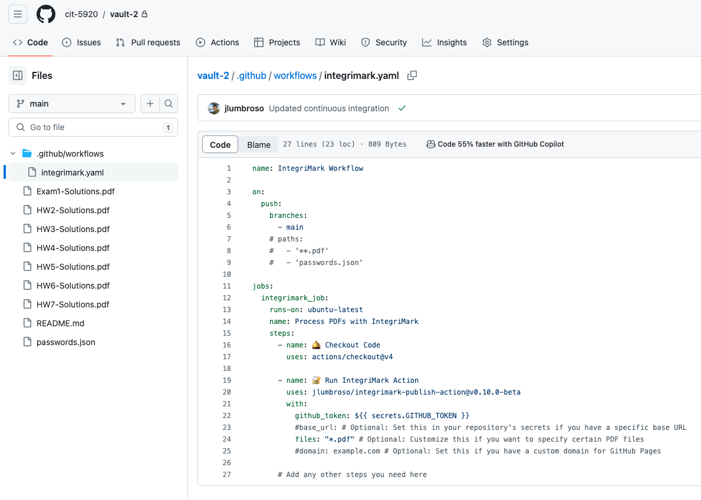
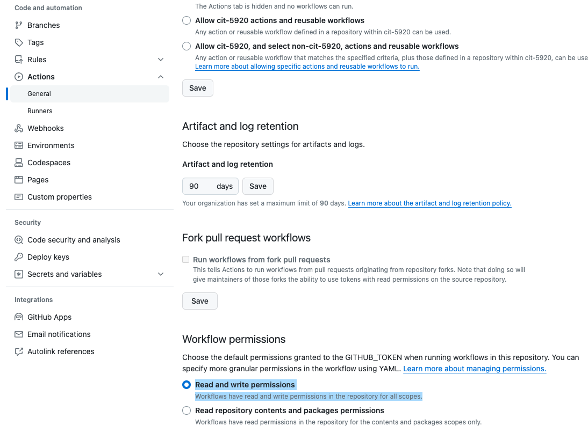
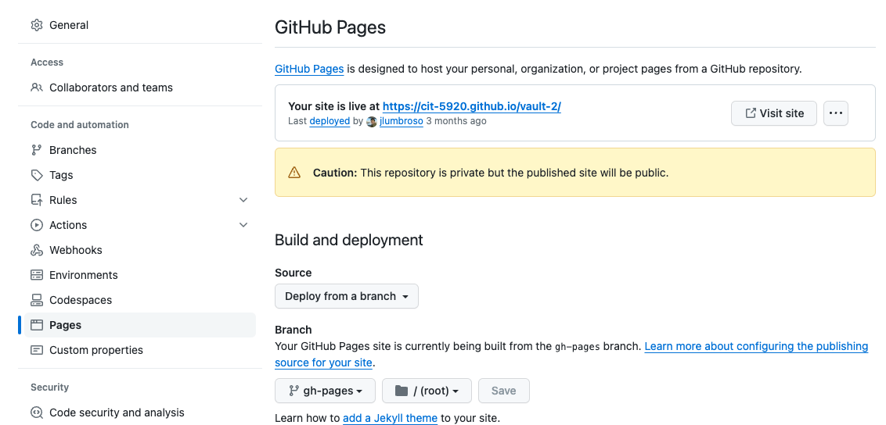
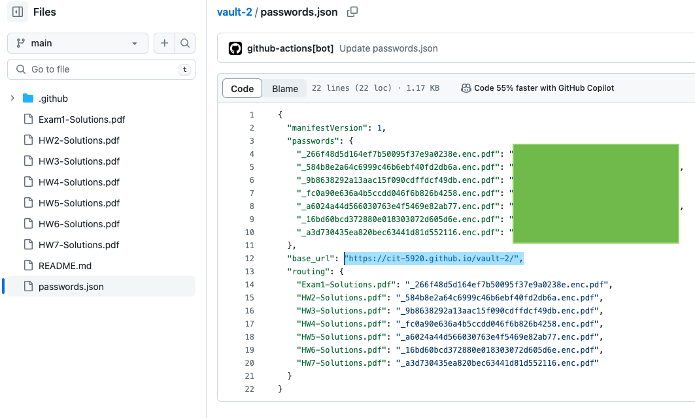
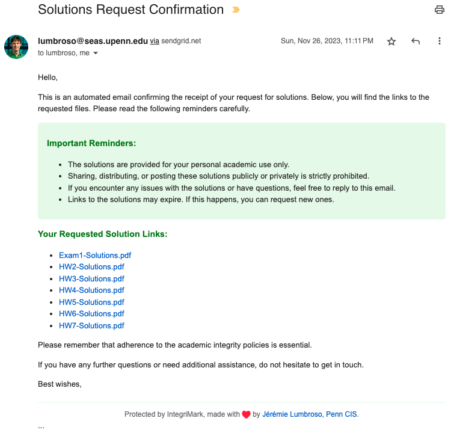

Getting Started with IntegriMark
In this guide, we will walk through an example repository to understand how to setup IntegriMark using the integrimark-publish-action GitHub Action.
Recall that IntegriMark can be run in two different ways:
-
Either it can be run manually on a local computer (following the instructions on the IntegriMark GitHub repository).
- In this scenario, the
integrimarkcommand line tool is used to generate the HTML “bundle” files and thepasswords.jsonlocally, and the bundle can then be published to GitHub Pages.
- In this scenario, the
-
Or it can be run automatically from a repository using continuous integration and the
integrimark-publish-actionGitHub Action.- In this scenario, all files are uploaded to a private repository, and the
integrimark-publish-actionGitHub Action continuously updates thepasswords.jsonfile to the private repository, and publishes the HTML “bundle” files to GitHub Pages.
- In this scenario, all files are uploaded to a private repository, and the
In this guide we will be using the second scenario, and we will walk through the steps to set up a repository to use the integrimark-publish-action GitHub Action.
Step 1: Create a new repository




